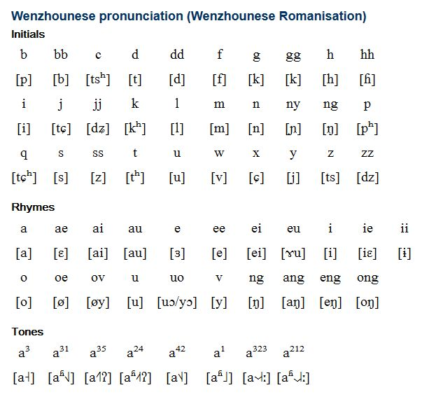

Introduction
Wenzhounese is the language spoken in Wenzhou, the southern prefecture of Zhejiang, China. Nicknamed the "Devil's Language" for its complexity and difficulty, it is the most divergent division of Wu Chinese, with little to no mutual intelligibility with other Wu dialects or any other variety of Chinese. It features noticeable elements in common with Min Chinese, which is spoken to the south in Fujian. Oujiang is sometimes used as the broader term, and Wenzhou for Wenzhounese proper in a narrow sense.
Due to its long history and the isolation of the region in which it is spoken, Wenzhounese is so unusual in its phonology that it has the reputation of being the least comprehensible dialect for an average Mandarin speaker.It preserves a large amount of vocabulary of classical Chinese lost elsewhere, earning itself the nickname "the living fossil", and has distinct grammatical differences from Mandarin.
Wenzhounese is one of five varieties of Chinese other than Standard Mandarin used for broadcasting by China Radio International, alongside Cantonese, Hokkien, Teochew, and Hakka.